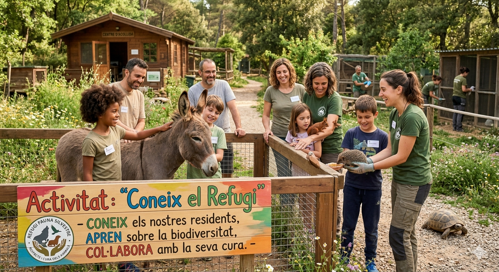

Conoce el Refugio
Una visita guiada para descubrir cómo funciona un refugio, conocer a los animales y entender la importancia de su protección.

Esta actividad permite a los participantes adentrarse en el funcionamiento real de un refugio: cómo llegan los animales, cómo se cuidan, qué necesidades tienen y cómo podemos ayudarlos.
Una experiencia educativa, transparente y llena de valores.
Durante la visita conoceremos los espacios del refugio, las zonas veterinarias, las áreas de socialización y los protocolos de bienestar animal.
Explicaremos el proceso de acogida, recuperación y adopción, así como el papel fundamental del voluntariado y las familias de acogida.
“Cuando conoces el refugio, entiendes que cada gesto puede cambiar la vida de un animal.”
CONOCE EL REFUGIO